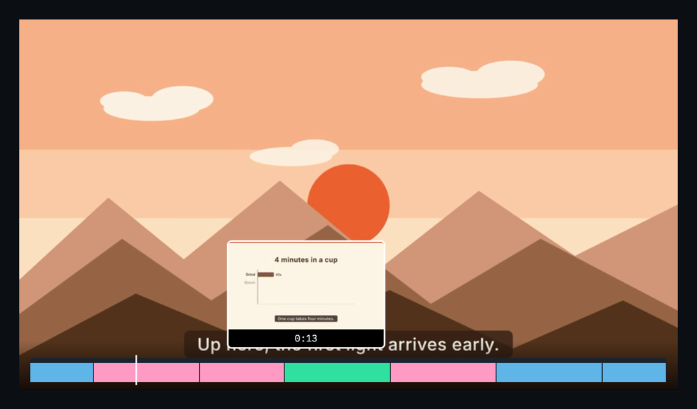
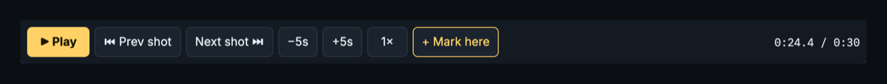
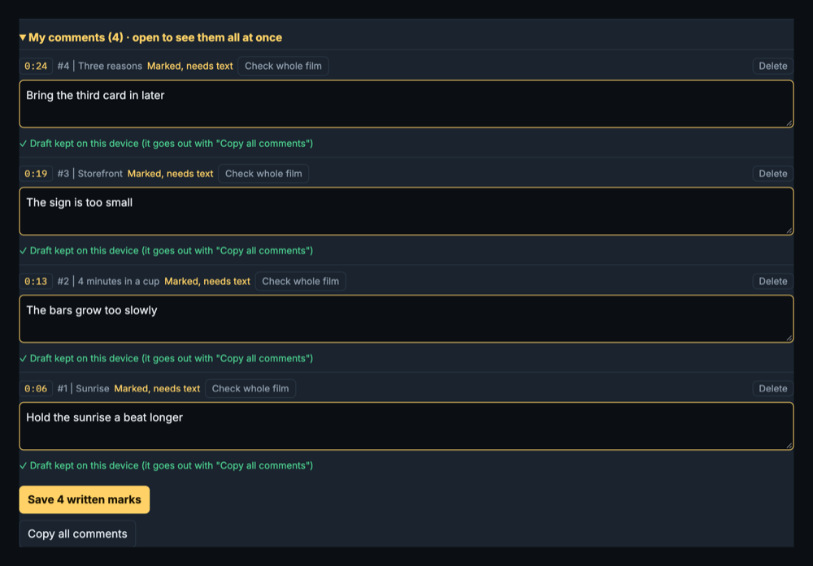
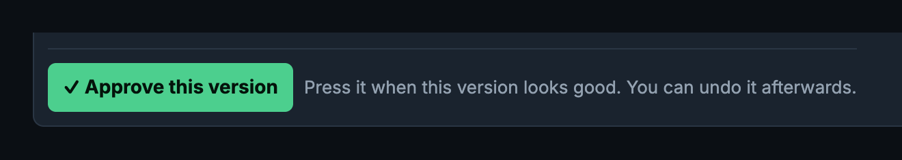
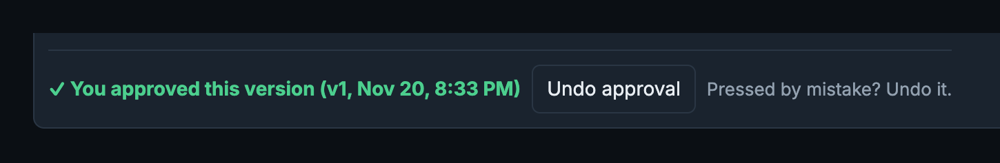
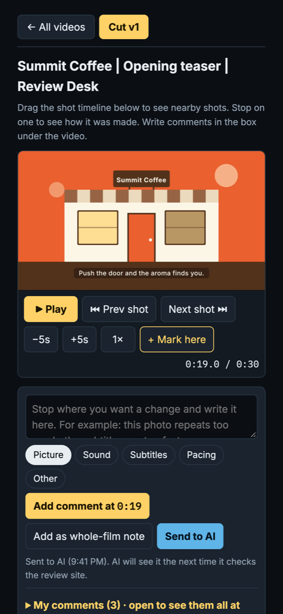
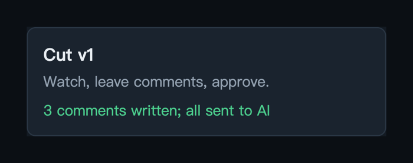

Review Desk quick-start guide
AI makes the video. You review it. Point at a shot and that’s the one it fixes.
Free, MIT licensed, open source
What you need
- Python 3.9 or later
- ffmpeg
- An AI agent (Claude Code, Codex and others)
Install
git clone https://github.com/betterconnie/review-desk ~/.claude/skills/review-desk
Or tell your AI: “Install the review-desk skill from github.com/betterconnie/review-desk”
Use it
Tell your AI agent: “Open the review desk.” It turns your film into a web page and opens it in your browser.
Want the English interface? Say: “use the English interface.” (The AI adds --lang en.)
Watch, mark and comment. Click ▶︎ Play or drag the timeline. Stop where you want a change, type, and click Add comment at 0:19.

Open My comments, click Copy all comments, and paste the text into the chat.

Review faster
Drag the timeline to preview every shot
Move the mouse over the video and the overview timeline appears. Drag it to see each shot. On a phone, tap the picture to show it.

Mark as you watch
Click + Mark here at each spot. The video keeps playing. You do not have to type yet.

Fill in the text afterwards
Open My comments and type under each mark. Click Save 4 written marks, or just click Copy all comments: written drafts go along.

Copy the whole list
Click Copy all comments and paste. Every comment carries its time, shot name and source.
[v1] From Review Desk: 4 comments; version not approved yet. [0:06 | Shot 2 "Sunrise" | Original, no external assets] Hold the sunrise a beat longer [0:13 | Shot 4 "4 minutes in a cup" | Original, no external assets] The bars grow too slowly [0:19 | Shot 5 "Storefront" | Original, no external assets] The sign is too small [0:24 | Shot 6 "Three reasons" | Original, no external assets] Bring the third card in later
Approve
Click ✓ Approve this version. It turns into Confirm approval? Click again. Click again within 4 seconds and the approval counts.
A new version needs its own approval: the old one does not carry over. Click Undo approval if you pressed by mistake. Only your own click counts.


Review on your phone (optional)

- First put Review Desk online: your own Netlify site, following
cloud/README.en.md. - Then open the link on your phone. Tap the picture to show the timeline.
- Click Send to AI, then tell the AI in the chat that you sent them. It does not wake up by itself.
- Until you set a password, anyone with the link can watch the film and write comments.

Good to know
- The film stays on your computer by default. Review Desk opens a local page, and neither the video nor your comments are uploaded. The page only asks Google Fonts for font files.
- In local mode, comments live only in the browser of that computer.
- Automatic shot detection looks at brightness differences, so two shots with similar brightness can be missed. Use
--scene 0.1or write a shot list. - So far it has only been tried in practice with Claude. The comment list is plain text, so you can paste it to any AI.